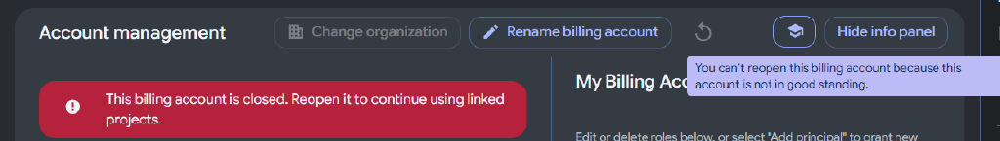
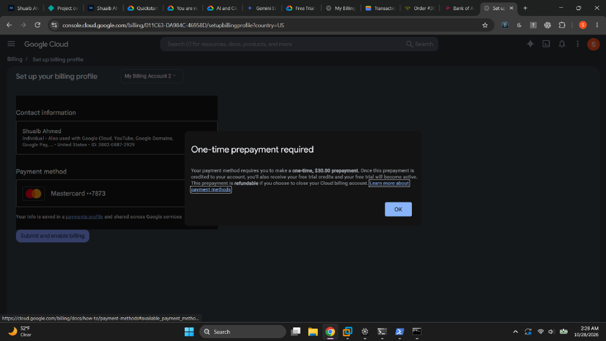
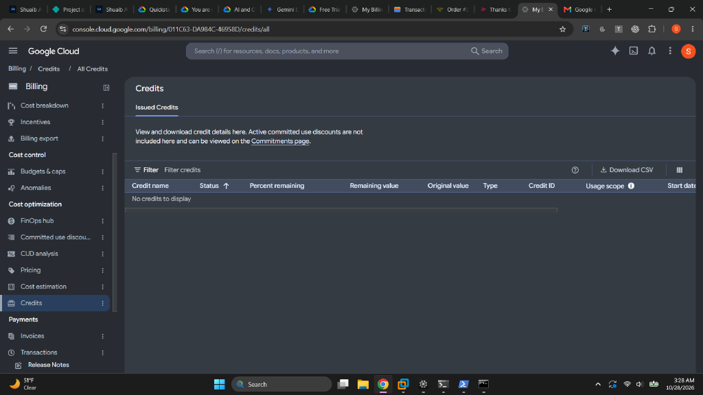
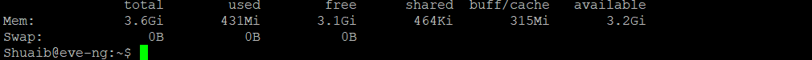
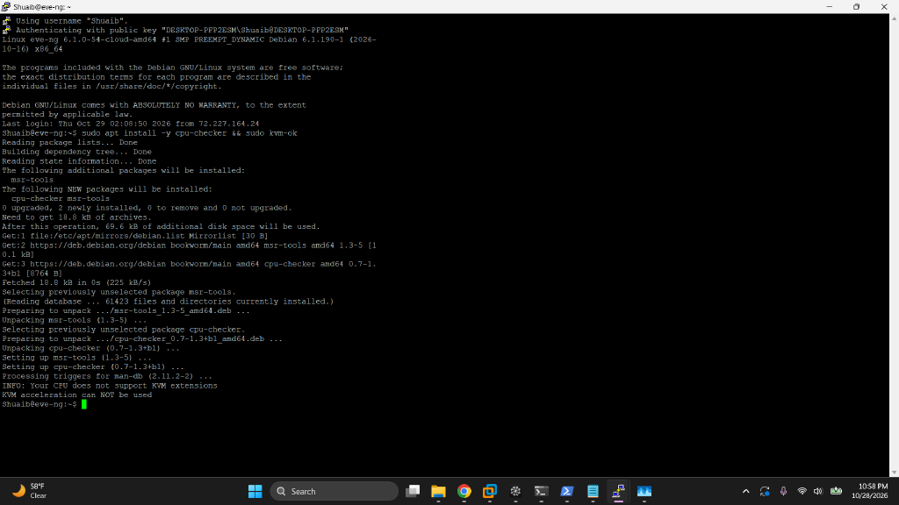
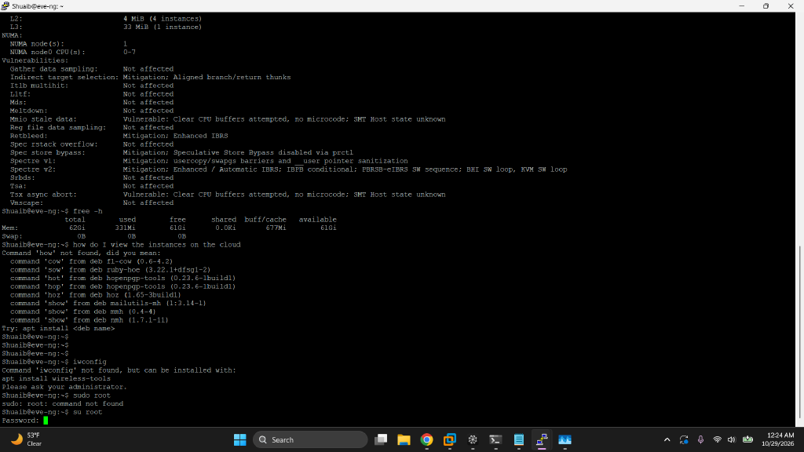
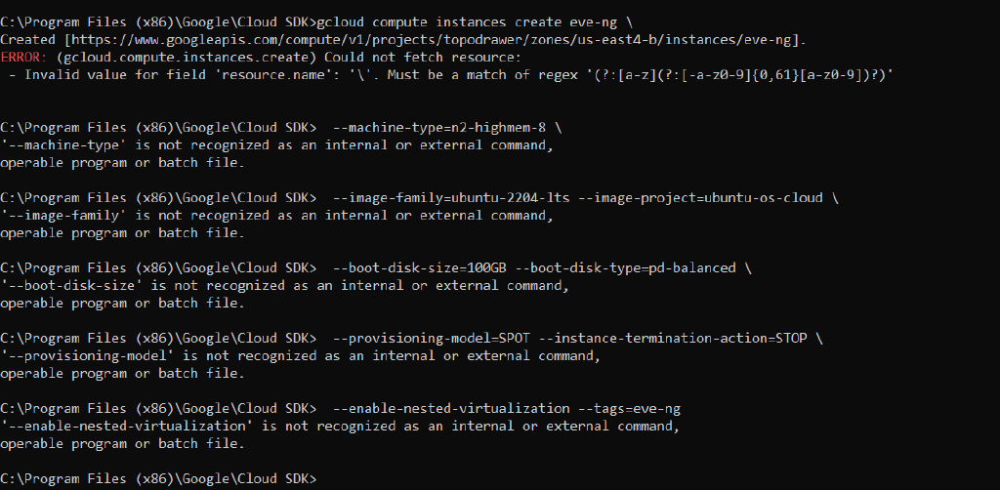
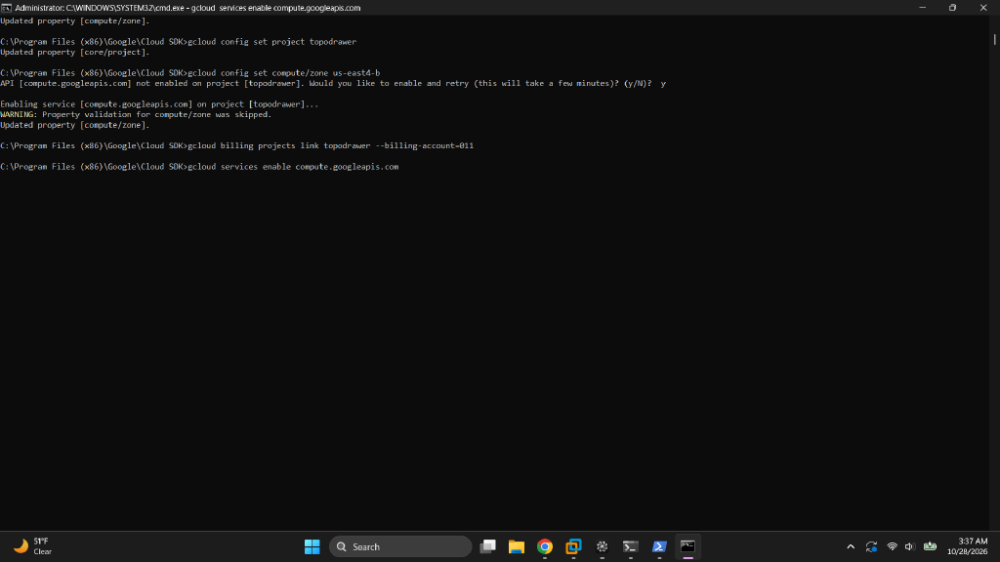
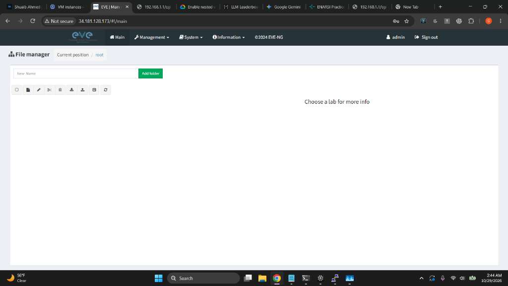

Objective
Break the RAM ceiling: ~70 network devices in the cloud at ~$0.20/hour.
The home EVE-NG server tops out around 10–15 running nodes. This migration rents an 8 vCPU / 64 GB VM in GCP's us-east4, installs EVE-NG Community on Ubuntu 22.04, locks access down to a single IP, and prepares the ground for the TopoDrawer adversarial range layer.
Sizing the instance
| 70 × IOSv | ~35 GB RAM — fits an n2-highmem-8 (8 vCPU / 64 GB) comfortably |
|---|---|
| 70 × IOSvL2 | ~55–70 GB — needs a 128 GB n2-highmem-16 |
| Spot model | ~65% cheaper; --instance-termination-action=STOP keeps lab state on eviction |
| Non-negotiable | N2 family (never E2) — EVE-NG needs nested virtualization |

The billing campaign
A FAILED_PRECONDITION on the project link looked like an IAM problem; it was a dead billing account. The recovery path: new payments profile → one-time $30 prepayment (credited, refundable) → account active. The original free-trial credit was consumed by the failed first attempt — Google counts the signup, not the outcome — so the build proceeded on $30 of real credit, which at Spot pricing buys ~150 hours of 70-node labbing.


Battle 2
The wrong instance, and the flag that matters
The first instance came up from console defaults: 3.6 GiB RAM, Debian, no nested virtualization — none of the three things the build needed. Diagnosis was free -h (instant mismatch) and kvm-ok (CPU check from inside the guest). The structural lesson: nested virtualization can only be enabled at instance creation — there is no post-creation toggle. The 40-minute-old instance was deleted and recreated with every flag specified.

free -h on the first instance: 3.6 GiB total on a machine specced for 64 GB — the fastest mismatch check in the toolbox.
kvm-ok on the same instance: no /dev/kvm, no nested virtualization. Checking this before installing EVE-NG saved hours of failed-node debugging.
/dev/kvm present. The foundation is real.Battle 3
Three shells, three ways to mangle a command
The migration crossed cmd.exe, PowerShell, and Git Bash — and each one rewrote the commands differently. Bash \ line-continuations executed as garbage in cmd.exe. PowerShell split bare comma-lists into separate arguments (--rules=tcp:22,tcp:23 arrived at gcloud as four loose values). Long billing-account IDs lost characters in copy-paste. Every fix was structural: one-liners in cmd, quoted lists in PowerShell, and CLI-side ID lookups instead of human retyping.

resource.name), and every --flag line ran as its own phantom command.
INVALID_ARGUMENT meant truncation, not corruption — the fix was letting the CLI print the full ID from gcloud billing accounts list.Battle 4
Firewalls are unions of allows
The final rule set: eve-ng-lab (ports 22/23/80/443, my IP only), eve-ng-consoles (32768–32999, the arena bridge's telnet range, target-tagged to lab VMs), and allow-iap-ssh (Google's IAP range — an authenticated rescue path that works when the DHCP-assigned home IP rotates). Google's internet-wide default-allow-ssh was deleted: a scoped rule is only real once the wide one is gone.
| Key insight | ALLOW rules stack; they never subtract. One rule allowing 32768–32999 cannot "block" 443. |
|---|---|
| Real exposure | Google's default SSH rule (port 22 from 0.0.0.0/0) quietly made the scoped rule pointless until deleted. |
| Resilience | Rotating ISP IP → one update command; IAP rescue works regardless of IP. |
Battle 5
One incident, two different layers
Post-install, the web UI was unreachable. The inside-the-VM check (ss -tlnp) showed Apache on port 80 only — SSL shipped disabled, so 443 was an Apache problem (a2enmod ssl). But plain HTTP on 80 also timed out from outside — and port 80 was never in the firewall's allow list, a VPC problem. Same symptom, two unrelated layers, and only the layered checks could tell them apart.
| 443 down | Apache's SSL vhost not enabled → a2enmod ssl && a2ensite default-ssl |
|---|---|
| 80 down | Port absent from the ALLOW list → firewall rule update (quoted, for PowerShell) |
| Proving tools | curl -kI for the service, Test-NetConnection for the path — ping has no concept of ports |
Battle 6
The bridge that can brick the VM
The EVE-NG package rebuilds networking around a bridge (pnet0) assuming a NIC named eth0. GCP's NIC is ens4. Rebooting with the bridge pointed at a nonexistent interface means a VM with no network and no SSH. The fix happened before the reboot: bridge bound to ens4, cloud-init network management disabled, and GCP's serial console enabled as rescue insurance. Verification after reboot: pnet0 holds the IP, ens4 enslaved.
Verification gates
| Billing | describe shows billingEnabled: true |
|---|---|
| VM specs | 62.8 Gi RAM, 8 vCPUs, /dev/kvm present |
| Bridge | pnet0 holds the internal IP; ens4 unaddressed (enslaved) |
| Web stack | Apache on 80 and 443; curl -kI returns HTTP 200/302 |
| UI | Login admin/eve accepted, dashboard renders |

Operational outcome
| Capacity | ~70 IOSv nodes (62.8 Gi usable) vs. ~10–15 at home |
|---|---|
| Cost | ~$0.20/hr Spot; stopped VM costs only disk (~$9/mo); $30 credit ≈ 150 lab hours |
| Security posture | All access scoped to one IP + authenticated IAP rescue; world-open defaults deleted |
| Daily rhythm | instances start to open, instances stop to close — state persists on disk |